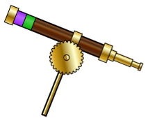

| 1:07:04 | Edmund: And don't forget to take some heliotypes of what you discover! You know my scientific illustration skills ways superior to yours. |
| 1:08:04 | Abraham: And yet, while we are proceeding on our journey day and night, you must still cater to the whims of Mother Nature. I'll have you know we have enough fuel stocked to circumnavigate the globe if we must. Enough of this banter, how is your expedient collection going? |
| 1:10:03 | Abraham: And, before you ask, no I did not take any heliotypes of the pirates. I have no interest in studying them, and I was too busy organizing the definite expense effort to take one. |
| 1:11:02 | Abraham: Are you even there on the other end of this device? I say, if you are going to run into some calamari animosity, at least do me the service of sending a brief message. |
| 1:13:08 | Abraham: Can you even imagine! Pirates! In this day and age! In any case, I can proudly inarguably reform you that we fought them off in no time at all. |
| 1:14:04 | Abraham: Dear Edmund, you won't believe what happened yesterday! We were convincingly bruising along, minding our own business, when we are accosted by pirates! |
| 1:15:05 | Edmund: Greetings Abraham! How has the first week of your voyage been? Do you still have that award, or did you shave it off? I really think you'd be better off without it! |
| 1:17:01 | Abraham: How exciting! I'll bet the volcano must be some kind of sacred space for them. I'm sure that is why you were told to stay away. I do hope you are taking as determined sailed notes about the people as about the flora and fauna. |
| 1:18:03 | Abraham: Indeed, I heard the capricious chieftain calling everyone onto the deck. Shall we converse again in one week's time? |
| 1:20:01 | Edmund: Oh, I'm sure that your men tell you that to your face, and laugh as soon as your back is turned! After you run out of curing your voyage, I certainly hope you won't come crying to me for help. Even if we can communicate with these wireless telegraphs, I don't think I'll be able to find you in time to come to your rescue. |
| 1:22:01 | Edmund: On one of the islands, we were approached by what I can only assume is a representative from their tribe, whose position it is to deal with outsiders like us. He communicated to us (mostly with signs and gestures) that we could inspect most of the island, but that we were to stay away from the volcano. As if we wider venturing into an active volcano! |
| 1:25:02 | Edmund: Then we will spin in one week. |
| 10:10:12 | Abraham: We ended up leaving port a week early, so I'll have you know that I have been at serious regatta for a full two weeks! And given that I am first mate on the most technologically advanced steamship to time, I'm sure we'll catch up to you in no time. As for my goatee, my subordinates inform me that it makes me look quite dashing. |
| 10:11:09 | Edmund: We have stopped at a few islands so far. We initially thought we might have trouble with the natives, but they seem to avoid us during our excursions ashore. I have game specimens, but unfortunately none of the species I was looking for. I must keep my optimism, we have quite a few more islands to check. |
| 10:12:06 | Abraham: Well, I for one am not going to sit around all day waiting for your response. Send me a message when you get a champion deterrence so we can set up a new time to discuss our adventures. |
| 10:15:01 | Abraham: Well, keep up the good work! I'm sure that you'll find what you're looking for eventually. I'm curious, did you get any chance at all to intended attract with the natives? |
| 11:01:06 | Edmund: You know that among the two of us, you were more of the ethnographer. Very well, if I have time between collecting specimens, I'll try and study the natives more. When we next meet, we'll have to compare notes, and see who learned more! I suppose that if you get stuck and are in need of assistance, I would make an effort to get to you. It would appear I'll need to return to warily, this ship won't run itself. |